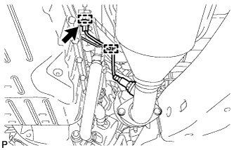

HEATED OXYGEN SENSOR > REMOVAL |
| 1. REMOVE HEATED OXYGEN SENSOR (for Bank 1 Sensor 2) |
 |
Disconnect the heated oxygen sensor connector.
Using SST, remove the heated oxygen sensor from the front No. 2 exhaust pipe.
| 2. REMOVE HEATED OXYGEN SENSOR (for Bank 2 Sensor 2) |
|  |
Detach the 2 clamps and disconnect the heated oxygen sensor connector.
 |
Using SST, remove the heated oxygen sensor from the front exhaust pipe.